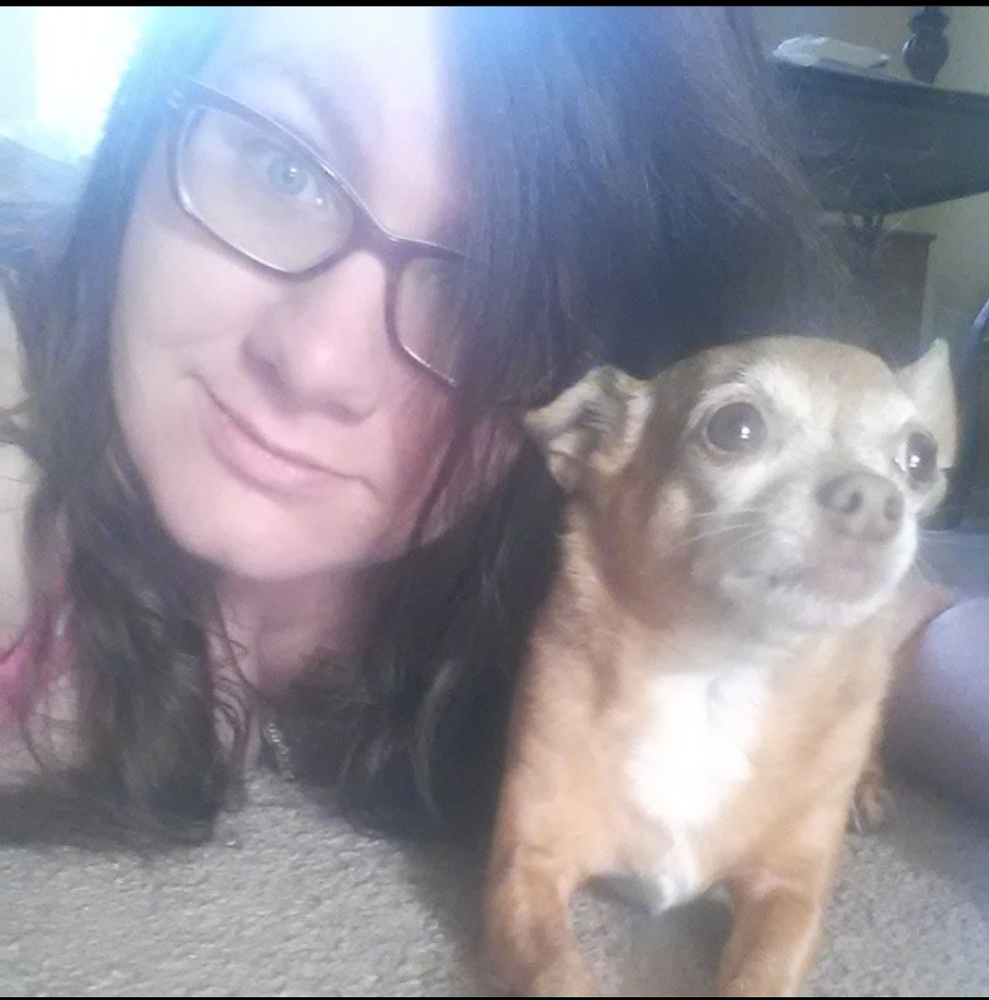

Sam is a wife, a mother, and a daughter. She cares a lot about family and likes to stay close to her parents and brother. Her daughter Ophelia was born in 2021 and is her entire world. She has been with her husband for over 7 years
and married for 1. They met through an online video game called World of Warcraft. After growing as friends they started a long distance relationship. It was only a short time before they would get their own place together and have been together
ever since. She has had a number of different jobs including in an aluminum factory, Wal-Mart, Target, and Fantastic Sam's. She went to school for hair and was a stylist at Fantastic Sam's briefly but after several moves it was not worth it
to keep up with state license changes at each different move. She currently is a stay at home mom taking care of her daughter.